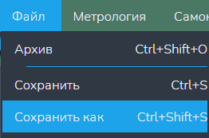
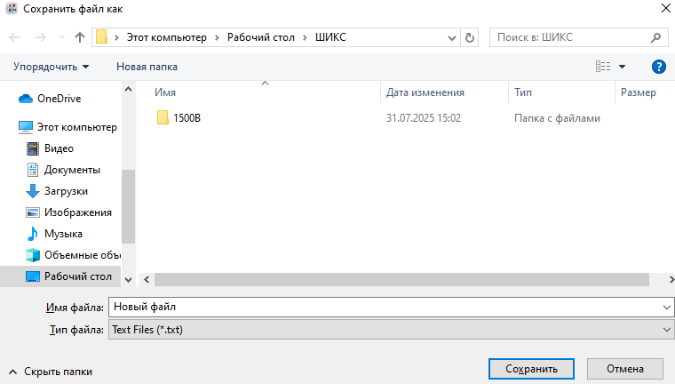
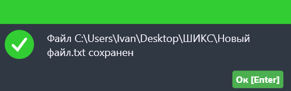

Функция "Сохранить как"
Данная функция создаёт новый текстовый документ, куда сохраняется содержание изменённого файла.
Внимание: данная кнопка доступна только когда открыт хотя бы один текстовый редактор!
Путь и вызов
Нахождение в программе
Верхнее меню → "Файл" → "Сохранить как"
Горячие клавишы
Ctrl + Shift + SНа изображении показано нахождение данной функции в программе:

Действия после нажатия
После нажатия горячих клавиш или ЛКМ по кнопке "Сохранить как" откроется файловый менеджер ОС. Указываем в нём название файла и указываем путь для сохранения (рисунок 2).

После нажатия кнопки "Сохранить" появляется окно (рисунок 3), сообщающее об успешном сохранении файла.
